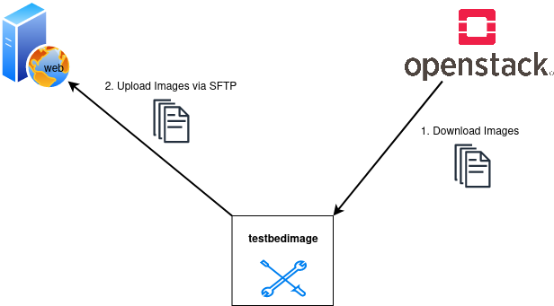

Deploy Images
This command downloads the newest versions of all the images that starts with the image-name defined in the command --images from the Openstack. The images are not stored locally but redirected to a location provided by an SFTP-server. A Manifest.json is written after each image-transfer.

Command-Line Options
usage: testbedimage deploy [-h] [-I IMAGES] [-s SSH_SERVER] [-P SSH_PORT] [-u SSH_USER] [-p SSH_PASS] [-k SSH_PASSPHRASE] [-t SSH_DIRECTORY] [-i SSH_KEYFILE] [-d]
options:
-h, --help show this help message and exit
-I IMAGES, --images IMAGES
imagenames seperated by comma
-s SSH_SERVER, --ssh-server SSH_SERVER
-P SSH_PORT, --ssh-port SSH_PORT
-u SSH_USER, --ssh-user SSH_USER
-p SSH_PASS, --ssh-pass SSH_PASS
-k SSH_PASSPHRASE, --ssh-passphrase SSH_PASSPHRASE
-t SSH_DIRECTORY, --ssh-directory SSH_DIRECTORY
-i SSH_KEYFILE, --ssh-keyfile SSH_KEYFILE
-d, --debug
-I IMAGES, --images IMAGES
: A comma-seperated list of image-names to check.
Default: atb-videoserver-image,atb-adminpc-image,atb-attacker-image,atb-corpdns-image,atb-fw-inet-lan-dmz-image
-s SSH_SERVER, --ssh-server SSH_SERVER
: Use this hostname or ip-address to connect via SFTP.
Type: str
-P SSH_PORT, --ssh-port SSH_PORT
: Use this port to connect via SFTP.
Type: int
Default: 22
-u SSH_USER, --ssh-user SSH_USER
: Use this username to login to the SFTP-server.
Type: str
-p SSH_PASS, --ssh-pass SSH_PASS
: Use this password to login to the SFTP-server.
Type: str
-k SSH_PASSPHRASE, --ssh-passphrase SSH_PASSPHRASE
: Keyphrase to unlock the keyfile
Type: str
-t SSH_DIRECTORY, --ssh-directory SSH_DIRECTORY
: Change into this directory on the SFTP-server.
Type: str
Default: "."
-i SSH_KEYFILE, --ssh-keyfile SSH_KEYFILE
: Keyfile to use to login to the SFTP-serfver.
Type: str
-d
: Enables debug-output.